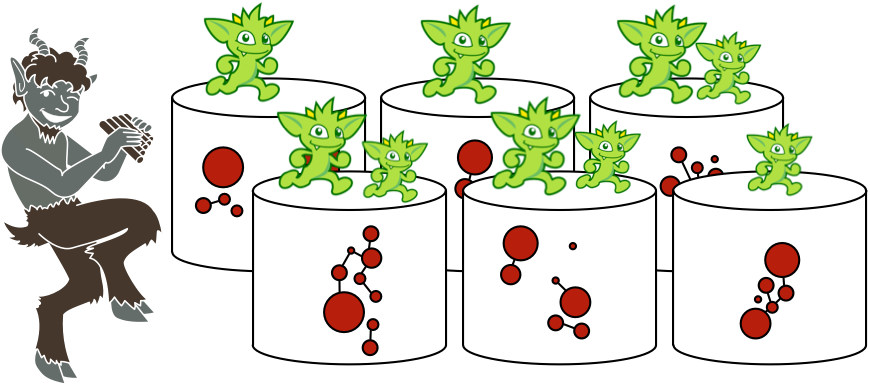

The script-step in Faunus’ Gremlin allows for the arbitrary execution of a Gremlin script against all vertices in the Faunus graph. This simple idea has interesting ramifications for Gremlin-based distributed graph computing. For instance, it is possible evaluate a Gremlin script on every vertex in the source graph (e.g. Titan) in parallel while maintaining data/process locality. This section will discuss the following two use cases.
- Global graph mutations: parallel update vertices/edges in a Titan cluster given some arbitrary computation.
- Global graph algorithms: propagate information to arbitrary depths in a Titan cluster in order to compute some algorithm in a parallel fashion.
The script-step requires that a Gremlin script exist in HDFS and has the following method definitions:
setup(String... args): called once per mapper duringMap.setup()map(FaunusVertex v, String... args): called for each key/value ofMap.map()withvbeing aFaunusVertexcleanup(String... args): called once per mapper duringMap.cleanup()
Finally, the script-step has a method signature of: FaunusPipeline.script(String scriptUri, String... args).
Global Graph Mutations
 One way to do global graph mutations with Faunus is to leverage an
One way to do global graph mutations with Faunus is to leverage an InputFormat that reads a graph from a graph database (e.g. Titan and/or Rexster) and then mutate the Faunus representation of that graph in HDFS over various Gremlin/Faunus steps. Finally, delete the original graph in the database and bulk load the new mutated Faunus graph using a respective OutputFormat. The problem with this method is that it requires the graph database to be cleared and re-loaded which, for production 24×7 systems, is not a reasonable requirement.
Another way to parallel update the graph is to use the script-step in order to allow for real-time, distributed bulk updates of the original graph in the graph database itself. A simple example explains the idea. Assume the Graph of the Gods dataset (see visualization) in Titan/Cassandra (or Titan/HBase) co-located with Hadoop data nodes and task trackers. Next, assume the following Gremlin/Groovy script called FathersNames.groovy (distributed with Faunus at data/FathersNames.groovy). This script will add a new property to each vertex called fathersName. This property’s value is the name of the vertex’s father (if the vertex has a father). As a Faunus side-effect, a String specifying the added father’s names is returned.
// FathersName.groovy
def g
// create a Titan database connection that exists for the life of the mapper
def setup(args) {
conf = new org.apache.commons.configuration.BaseConfiguration()
conf.setProperty('storage.backend', args[0])
conf.setProperty('storage.hostname', 'localhost') // co-located Hadoop ensures local Titan machine has vertex
g = com.thinkaurelius.titan.core.TitanFactory.open(conf)
}
// process each Faunus vertex
// - find the corresponding Titan vertex as it shares the same id with the Faunus vertex
// - update the Titan vertex given some Gremlin traversal over Titan
def map(v, args) {
u = g.v(v.id) // the Faunus vertex id is the same as the original Titan vertex id
pipe = u.out('father').name
if (pipe.hasNext()) u.fathersName = pipe.next();
u.name + "'s father's name is " + u.fathersName
}
// close the Titan database connection
def cleanup(args) {
g.shutdown()
}
Place this FathersName.groovy file into HDFS using Gremlin.
gremlin> hdfs.copyFromLocal('data/FathersNames.groovy', 'FathersNames.groovy')
==>null
With this file in HDFS, it is possible to execute the following Gremlin/Faunus traversal. For all demigod and god vertices in the graph, add the vertex’s father’s name to the vertex if it exists.
g.V.has('type','demigod','god').script('FathersName.groovy','cassandrathrift')
The Graph of the Gods in Titan serves as the input to the Faunus job. NoOpOutputFormat is used as there no need to write the graph as the original Titan representation of the graph is being mutated.
gremlin> g = FaunusFactory.open('bin/titan-cassandra-input.properties')
==>faunusgraph[titancassandrainputformat->graphsonoutputformat]
gremlin> g.setGraphOutputFormat(NoOpOutputFormat.class)
==>null
gremlin> g.V.has('type','demigod','god').script('FathersName.groovy','cassandrathrift')
13/03/06 18:21:43 INFO mapreduce.FaunusCompiler: Compiled to 1 MapReduce job(s)
13/03/06 18:21:43 INFO mapreduce.FaunusCompiler: Executing job 1 out of 1: MapSequence[com.thinkaurelius.faunus.mapreduce.transform.VerticesMap.Map, com.thinkaurelius.faunus.mapreduce.filter.PropertyFilterMap.Map, com.thinkaurelius.faunus.mapreduce.util.ScriptMap.Map]
13/03/06 18:21:43 INFO mapreduce.FaunusCompiler: Job data location: output/job-0
13/03/06 18:21:43 WARN mapred.JobClient: Use GenericOptionsParser for parsing the arguments. Applications should implement Tool for the same.
13/03/06 18:21:44 INFO mapred.JobClient: Running job: job_201303061253_0077
13/03/06 18:21:45 INFO mapred.JobClient: map 0% reduce 0%
13/03/06 18:21:53 INFO mapred.JobClient: map 50% reduce 0%
...
==>hercules's father's name is jupiter
==>pluto's father's name is null
==>jupiter's father's name is saturn
==>neptune's father's name is null
Looking at the original graph in Titan, those vertices that have fathers, have a new fathersName property.
gremlin> g.V.transform("{it.name + ' ' + it.fathersName}")
...
13/03/06 18:25:40 INFO mapred.JobClient: Running job: job_201303061253_0078
13/03/06 18:25:41 INFO mapred.JobClient: map 0% reduce 0%
...
==>tartarus null
==>alcmene null
==>sea null
==>hydra null
==>hercules jupiter
==>cerberus null
==>pluto null
==>saturn null
==>sky null
==>jupiter saturn
==>neptune null
==>nemean null
 In the example above, Faunus serves the role of filtering the vertices to be processed down to demigods and gods and then provides the script the id of the Titan vertex to ultimately compute on. One of the important ideas to take away from this example is that while Faunus is vertex-bound (a step can only operate on the vertex and its incident edges), with
In the example above, Faunus serves the role of filtering the vertices to be processed down to demigods and gods and then provides the script the id of the Titan vertex to ultimately compute on. One of the important ideas to take away from this example is that while Faunus is vertex-bound (a step can only operate on the vertex and its incident edges), with script and a Titan connection it is possible to do arbitrary walks of arbitrary depths at a single step and thus, allows for more expressive bulk/global computations over Titan.
Typical bulk mutation use cases are outlined below:
- “We need to convert all the
Stringdates toLongdates.” - “For all people vertices, lets add a new edge called
grandfatherthat is computed fromfather*fatheredges.” - “We need to delete all users and all their respective data (uploads, folders, friendships, etc.) that haven’t logged into the system in the last 2 years.”
- “We need to calculate a centrality score with Faunus and then write the scores back to the original Titan cluster vertices.”
Finally, note that localhost is used as the storage.hostname for Titan. If the Hadoop cluster is colocated with the Cassandra (or HBase) cluster, then localhost is the location of both the FaunusVertex and the TitanVertex. Thus, the computation exists along side the data within the cluster.
Global Graph Algorithms
More to come…